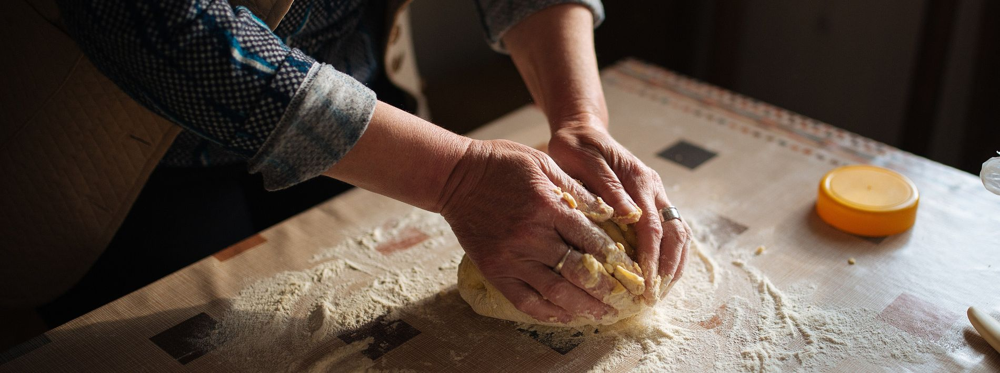

«Колосок» — небольшая пекарня на Садовой, 12. Хлеб ставим на живой закваске: пшеничный батон, ржаной бородинский, цельнозерновой с семечками и хлеб без дрожжей на ржаной закваске. Утром — круассаны, синнабоны и пирожки, к праздникам — медовик, наполеон и бенто-торты.
Почти вся выпечка содержит глютен, молоко и яйца, а мука в цеху общая, поэтому изделий без глютена у нас нет. Зато есть постное: бородинский, хлеб на ржаной закваске, чиабатта и пирожки с капустой и картошкой.
Для офисов от 15 человек собираем кофе-брейки и фуршеты: заказ за 3 дня, работаем по договору и выставляем счёт. Карта гостя бесплатная, оформляется на кассе по номеру телефона и возвращает 5 % от покупки баллами.